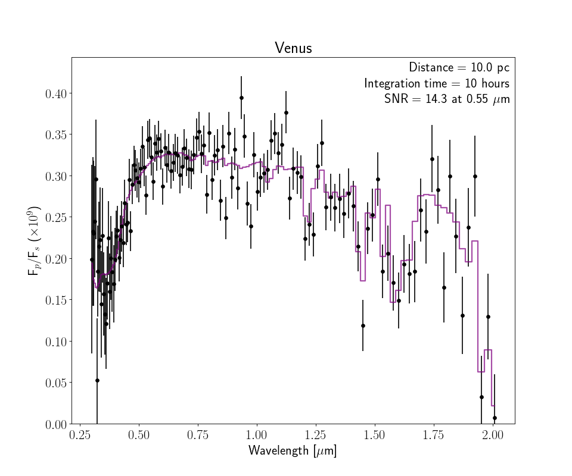
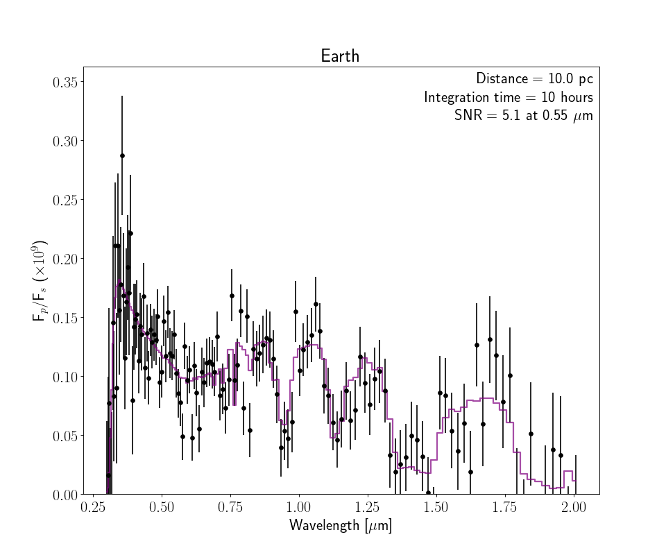
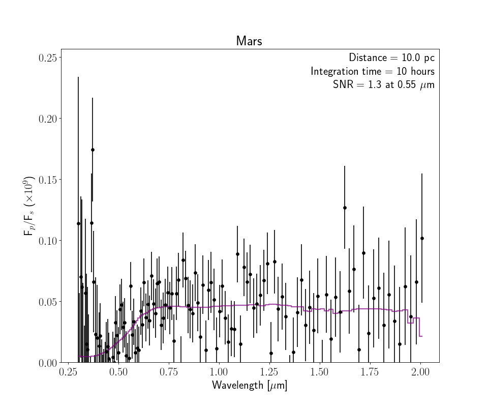

Observational Routines¶
The following functions provide additional mock observing features for use with the coronagraph model.
-
coronagraph.observe.get_earth_reflect_spectrum()¶ Get the geometric albedo spectrum of the Earth around the Sun. This was produced by Tyler Robinson using the VPL Earth Model (Robinson et al., 2011)
Returns: - lamhr (numpy.ndarray)
- Ahr (numpy.ndarray)
- fstar (numpy.ndarray)
-
coronagraph.observe.planetzoo_observation(name='earth', telescope=<coronagraph.teleplanstar.Telescope object>, planet=<coronagraph.teleplanstar.Planet object>, itime=10.0, planetdir='/Users/Jake/Projects/coronagraph/coronagraph/planets/', plot=False, savedata=False, saveplot=False, ref_lam=0.55, THERMAL=False)¶ Observe the Solar System planets as if they were exoplanets.
Parameters: - name (str (optional)) –
- Name of the planet. Possibilities include:
- ”venus”, “earth”, “archean”, “mars”, “earlymars”, “hazyarchean”, “earlyvenus”, “jupiter”, “saturn”, “uranus”, “neptune”
- telescope (Telescope (optional)) – Telescope object to be used for observation
- planet (Planet (optional)) – Planet object to be used for observation
- itime (float (optional)) – Integration time (hours)
- planetdir (str) – Location of planets/ directory
- plot (bool (optional)) – Make plot flag
- savedata (bool (optional)) – Save output as data file
- saveplot (bool (optional)) – Save plot as PDF
- ref_lam (float (optional)) – Wavelength at which SNR is computed
Returns: - lam (array) – Observed wavelength array (microns)
- spec (array) – Observed reflectivity spectrum
- sig (array) – Observed 1-sigma error bars on spectrum
Example
>>> from coronagraph.observe import planetzoo_observation >>> lam, spec, sig = planetzoo_observation(name = "venus", plot = True)
>>> lam, spec, sig = planetzoo_observation(name = "earth", plot = True)
>>> lam, spec, sig = planetzoo_observation(name = "mars", plot = True)
- name (str (optional)) –
-
coronagraph.observe.generate_observation(wlhr, Ahr, solhr, itime, telescope, planet, star, ref_lam=0.55, tag='', plot=True, saveplot=False, savedata=False, THERMAL=False, wantsnr=10)¶ (Depreciated) Generic wrapper function for count_rates.
Parameters: - wlhr (float) – Wavelength array (microns)
- Ahr (float) – Geometric albedo spectrum array
- itime (float) – Integration time (hours)
- telescope (Telescope) – Telescope object
- planet (Planet) – Planet object
- star (Star) – Star object
- tag (string) – ID for output files
- plot (boolean) – Set to True to make plot
- saveplot (boolean) – Set to True to save the plot as a PDF
- savedata (boolean) – Set to True to save data file of observation
Returns: - lam (array) – Wavelength grid for observed spectrum
- dlam (array) – Wavelength grid widths for observed spectrum
- A (array) – Low res albedo spectrum
- spec (array) – Observed albedo spectrum
- sig (array) – One sigma errorbars on albedo spectrum
- SNR (array) – SNR in each spectral element
Note
If saveplot=True then plot will be saved If savedata=True then data will be saved
-
coronagraph.observe.plot_coronagraph_spectrum(wl, ofrat, sig, itime, d, ref_lam, SNR, truth=None, xlim=None, ylim=None, title='', save=False, tag='')¶ Plot synthetic data from the coronagraph model
Parameters: - wl (array-like) – Wavelength grid [microns]
- ofrat (array-like) – Observed contrast ratio (with noise applied)
- sig (array-like) – One-sigma errors on
ofrat - itime (float) – Integration time for calculated observation [hours]
- d (float) – Distance to system [pc]
- ref_lam (float) – Reference wavelength [microns]
- SNR (array) – Signal-to-noise
- truth (array-like (optional)) – True contrast ratio
- xlim (list (optional)) – Plot x-axis limits
- ylim (list (optional)) – Plot y-axis limits
- title (str (optional)) – Plot title and saved plot name
- save (bool (optional)) – Set to save plot
- tag (str (optional)) – String to append to saved file
Returns: - fig (matplotlib.Figure)
- ax (matplotlib.Axis)
Note
Only returns
fig, axifsave = False
-
coronagraph.observe.process_noise(Dt, Cratio, cp, cb)¶ Computes SNR, noised data, and error on noised data.
Parameters: - Dt (float) – Telescope integration time in seconds
- Cratio (array) – Planet/Star flux ratio in each spectral bin
- cp (array) – Planet Photon count rate in each spectral bin
- cb (array) – Background Photon count rate in each spectral bin
Returns: - cont (array) – Noised Planet/Star flux ratio in each spectral bin
- sigma (array) – One-sigma errors on flux ratio in each spectral bin
- SNR (array) – Signal-to-noise ratio in each spectral bin
-
coronagraph.observe.random_draw(val, sig)¶ Draw fake data points from model
valwith errorssig
-
coronagraph.observe.interp_cont_over_band(lam, cp, icont, iband)¶ Interpolate the continuum of a spectrum over a masked absorption or emission band.
Parameters: - lam (array) – Wavelength grid (abscissa)
- cp (array) – Planet photon count rates or any spectrum
- icont (list) – Indicies of continuum (neighboring points)
- iband (list) – Indicies of spectral feature (the band)
Returns: ccont – Continuum planet photon count rates across spectral feature, where len(ccont) == len(iband)
Return type: list
-
coronagraph.observe.exptime_band(cp, ccont, cb, iband, SNR=5.0)¶ Calculate the exposure time necessary to get a given S/N on a molecular band following Eqn 7 from Robinson et al. (2016),
\({\rm{S}}/{{\rm{N}}}_{\mathrm{band}}=\displaystyle \frac{{\displaystyle \sum }_{j}\;{c}_{{\rm{cont,}}j}-{c}_{{\rm{p,}}j}}{\sqrt{{\displaystyle \sum }_{j}\;{c}_{{\rm{p,}}j}+2{c}_{{\rm{b,}}j}}}\;\Delta {t}_{\mathrm{exp}}^{1/2}\)
where the sum is over all spectral elements (denoted by subscript “j”) within the molecular band.
Parameters: - cp – Planet count rate
- ccont – Continuum count rate
- cb – Background count rate
- iband – Indicies of molecular band
- SNR – Desired signal-to-noise ratio on molecular band
Returns: texp – Telescope exposure time [hrs]
Return type: float
-
coronagraph.observe.plot_interactive_band(lam, Cratio, cp, cb, itime=None, SNR=5.0)¶ Makes an interactive spectrum plot for the user to identify all observed spectral points that make up a molecular band. Once the plot is active, press ‘c’ then select neighboring points in the Continuum, press ‘b’ then select all points in the Band, then press ‘d’ to perform the calculation.
Parameters: - lam (array) – Wavelength grid
- Cratio (array) – Planet-to-star flux contrast ratio
- cp (array) – Planetary photon count rate
- cb (array) – Background photon count rate
- itime (float (optional)) – Fiducial exposure time for which to calculate the SNR
- SNR (float (optional)) – Fiducial SNR for which to calculate the exposure time